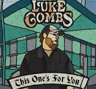
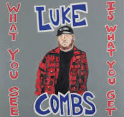

 This One's for You Publishing Date: June 2, 2017 1. Out There 2. Beer Never Broke My Heart 3. Hurricane 4. When It Rains It Pours
 What You See Is What You Get Publishing Date: November 8, 2019 1. Beer Never Broke My Heart 2. Even Though I'm Leaving 3. Does to Me (feat. Eric Church) 4. 1, 2 Many (feat. Brooks & Dunn)
Growin' Up Publishing Date: June 24, 2022 1. Growin' Up 2. The Kind of Love We Make 3. On the Other Line 4. Where the Country Girls At